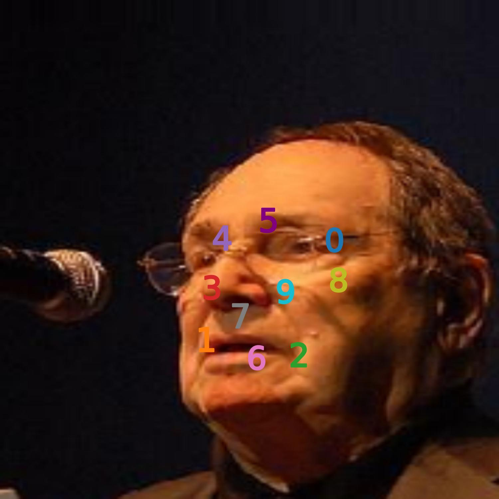
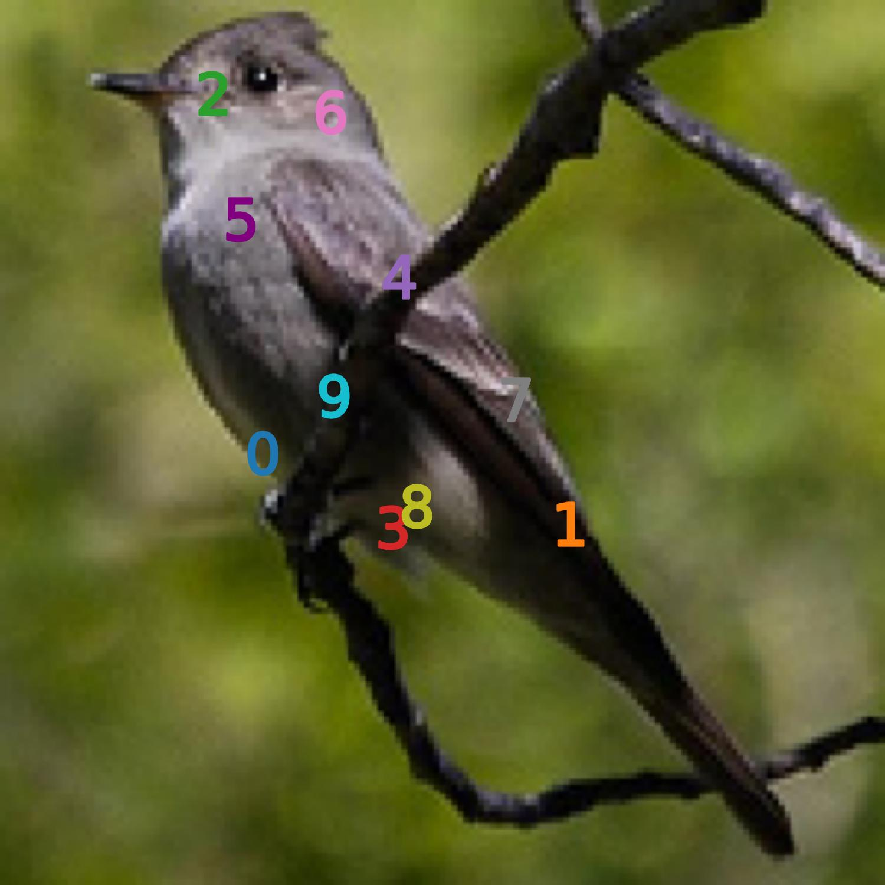

More qualitative examples
We show more qualitative examples of our unsupervised keypoints for each dataset. Each keypoint should be consistently at the same semantic location.

CelebA Aligned
CelebA in the wild

DeepFashion

Tai-Chi-HD
CUB-200-2011 all

CUB-200-2011 aligned


Human3.6m unaligned
Human3.6m